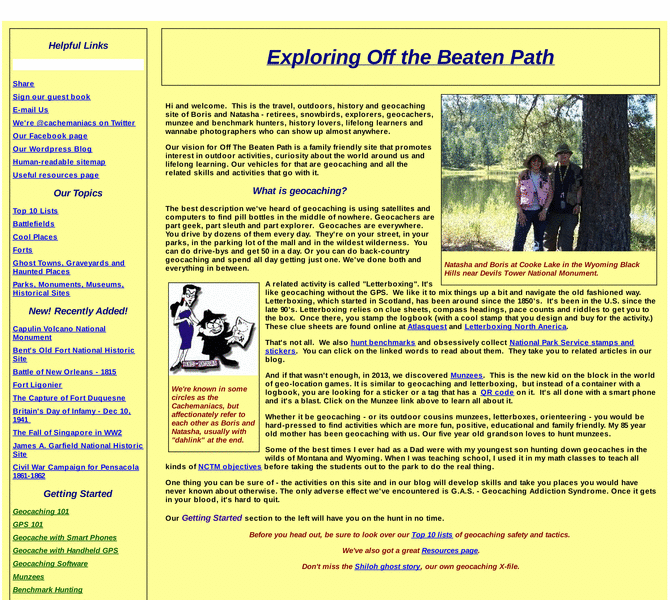

Previewing: Off the Beaten Path - Explore and learn in the outdoors Previewing: Off the Beaten Path - Explore and learn in the outdoors 
Use the left/right red arrow controls to navigate through this ring - Click the preview image to visit the member site.

Outdoor, travel and history site by two retired Boomers. It combines geocaching, letterboxing, munzees, orienteering and related activities with history, travelogues, tips and commentary. Our quests include historical sites, forts, battlefields, ghost towns, parks, urban exploration and back country wilderness. We seek out little known places to explore, photograph and write about. The more challenging or remote they are, the better we like it. We hope to promote lifelong learning and curiosity about our world, especially in young people. If you are looking for ideas to teach and motivate kids, get them active outside and have some fun together, this site offers a lot. There's no armchair traveling. We've been to every place on these pages. The content is ours. Most of it is Off the Beaten Path.
Off the Beaten Path - Explore and learn in the outdoors owned by:
 offthebeatenpathdotws1 offthebeatenpathdotws1
A member of the original webring since 11/22/2013.
|
|